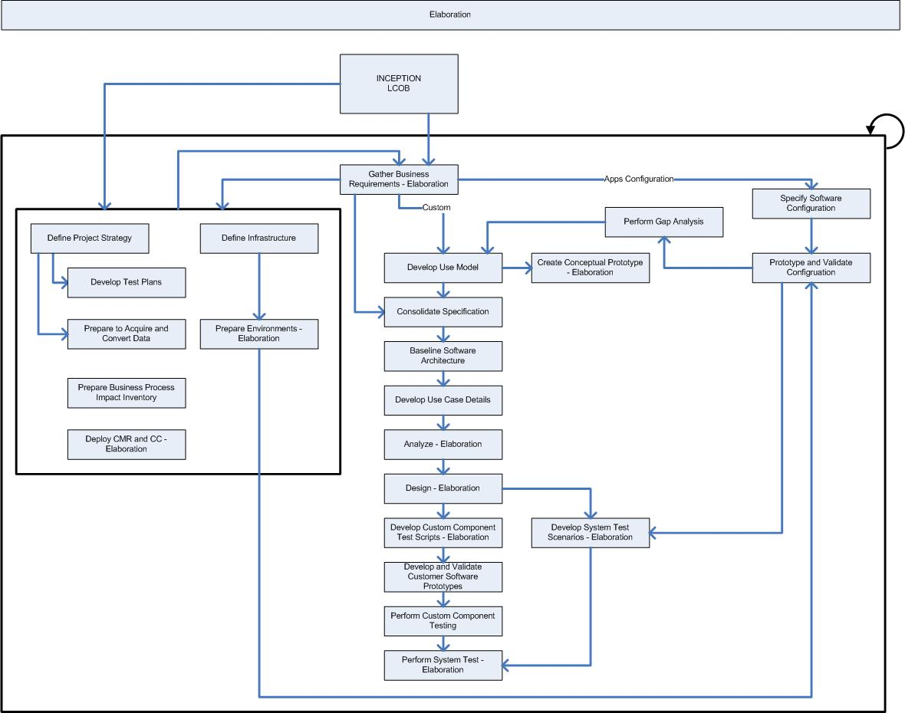

OUM |
Phase Overview |
||
Method Navigation |
Current Page Navigation |
||
|
|
||||||||
The goal of the Elaboration phase is to move development of the solution from the scoping and high-level requirements done during the Inception phase to developing the detailed requirements, partitioning the solution, prototyping (where necessary), and baselining the architecture of the system to provide a stable basis for the design and implementation effort in the Construction phase. The architecture evolves from the most significant requirements -- those that have a great impact on the architecture of the system -- and an assessment of risk. The stability of the architecture is evaluated through one or more architectural prototypes. During the Elaboration phase, the project team's understanding of the business requirements is verified to reduce development risk.
The Elaboration phase finishes with the Lifecycle Architecture Milestone. Review and be familiar with the objectives of this milestone before you begin this phase and make sure you have met these objectives before you move to the Construction phase.
 This phase overview is written from the perspective of a Full Method View, utilizing ALL of the processes, activities and tasks in this phase. Therefore, all of the following sections provide comprehensive information. If your project is utilizing a tailored approach (for example, Technology Full Lifecycle View, Application Implementation View, Middleware Architecture View), not everything in this overview may be appropriate for your project. Please keep this in mind, especially when reviewing the Prerequisites, Processes, Key Work Products, Tasks and Work Products and Task Dependencies sections. You should use OUM as a guideline for performing all types of information technology projects, but keep in mind that every project is different and that you need to adjust project activities according to each situation. Do not hesitate to add, remove, or rearrange tasks, but be sure to reflect these changes in your estimates and risk management planning. You should also consider the depth to which you address and complete each task based on the characteristics of your particular project or project increment. See Oracle's Full Lifecycle Method for Deploying Oracle-Based Business Solutions for further information on the scalability and adaptability of OUM.
This phase overview is written from the perspective of a Full Method View, utilizing ALL of the processes, activities and tasks in this phase. Therefore, all of the following sections provide comprehensive information. If your project is utilizing a tailored approach (for example, Technology Full Lifecycle View, Application Implementation View, Middleware Architecture View), not everything in this overview may be appropriate for your project. Please keep this in mind, especially when reviewing the Prerequisites, Processes, Key Work Products, Tasks and Work Products and Task Dependencies sections. You should use OUM as a guideline for performing all types of information technology projects, but keep in mind that every project is different and that you need to adjust project activities according to each situation. Do not hesitate to add, remove, or rearrange tasks, but be sure to reflect these changes in your estimates and risk management planning. You should also consider the depth to which you address and complete each task based on the characteristics of your particular project or project increment. See Oracle's Full Lifecycle Method for Deploying Oracle-Based Business Solutions for further information on the scalability and adaptability of OUM.
The following is a list of the objectives of this phase:
The Elaboration Phase / Lifecycle Architecture (LA) Milestone Checklist is available to assist with determination of completeness for this phase.
The following processes are active in this phase:
Refer to Key Work Products for a complete list of key work products in OUM.
This section discusses the primary techniques that may be helpful in conducting the Elaboration phase. It also includes advice and commentary on each process.
A number of requirements workshops are used to determine and detail the requirements for the OUM solution. The information that was gained during the Inception phase is used as input for the preparation of the workshops. All the requirements are consolidated into the Requirements Specification. All these requirements should also be prioritized following the MoSCoW principle. The users should do the prioritizing, but you need to help and advise them in the process. Monitor whether the priorities provided are reasonable.
One of the objectives of the Elaboration phase is to create a sound application architecture. In the Inception phase, you created an initial Architecture Description. You need to analyze the requirements to determine whether there are factors that may influence the application architecture.
Based on the information gained in the requirements workshops, use the defined requirements to develop the Use Case Model and detail a number of selected use cases. The use cases you detail are those that seem to be most vital to the new system. One aim is to achieve a stable architecture foundation at the end of the Elaboration phase, therefore, focus on identifying the use cases that may have the most impact on how the architecture is built. Another aim is to mitigate significant risks, therefore, pick those use cases where the most risk is involved. This is a way of investigating the risk as soon as possible, and thereby taking action to mitigate these risks as early as possible. If you have partitioned the system/project, you will perform this activity for all of the partitions.
The use cases are used as input to create the Functional Prototype in the Implementation process. When the prototype is ready, a walkthrough (RA.085 - Validate Functional Prototype) is performed with the users. This is a workshop where the user interface designer walks the users through the design to demonstrate the design team's understanding of the agreed on requirements. Therefore, the Functional Prototype is mainly a means of communication, by which to refine, adjust and add missing requirements. This validation is a major activity in the Elaboration phase, and the output provides the input for the next phase, or iteration. Allow sufficient time for the validation. Again use the MoSCoW principle to prioritize the functionality as well as to prioritize how the time is used during the workshop.
In the Mapping and Configuration process, the values for the key structural elements in the applications established in Inception are further refined. The business requirements are mapped to the COTS application. Setup Information, Application Setups and the Functional Security Setup are gathered, defined and documented. Configuration Prototyping workshops are conducted with the organization to validate the configuration. Once the configuration has been validated and gaps have been defined, alternatives for resolving the gaps are defined and estimated and ultimately an alternative is selected. Alternatives that require custom extensions are resolved through use cases.
In the Analysis process, you take the use cases that have been detailed in the Requirements Analysis process a step further. In the Elaboration phase we focus on those use cases that are architectural significant and more complex to gain an understanding of the complexity of the requirements. We analyze the use cases and structure them via various conceptual components and models. All of the Analysis components are organized into the Analysis Model. The Analysis Model provides the developers with an understanding of the requirements and the details on the internals of the system. The Analysis Model components use the language of the developers as opposed to Requirements where the emphasis is on the functionality of the system expressed in the language of the business. It thus contributes to a sound and stable architecture and facilitates an in-depth understanding of the requirements. The Analysis Model is also considered the first cut of the Design Model, since it contains the analysis classes that will be further detailed during the Design process.
During the Design process, the system is shaped and formed to meet functional and supplemental requirements. At this stage the focus is on an architectural level. The architecturally-significant use cases that have been analyzed in the Analysis process are taken further to design architectural significant classes, software components and their interfaces. You will also create an initial Logical Database Design, applying the rules and principles of relational system design.
During the Elaboration phase, three significant work products are produced in the Implementation process; the Functional Prototype, the Architectural Prototype, and the User Interface Standards Prototype. To create the Functional Prototype, the use cases that are most critical are prototyped and validated by the users (as part of the Requirements Analysis process). The Architectural Prototype is based on the use cases that have been identified to be most architecturally challenging. The prototype should take the form of how the major components should be built. This helps in mitigating technological risks that may be encountered by trying out the pieces of technology to be used in developing the system. The biggest technological risks are inherent in how the components of a design fit together rather than in the components themselves. The User Interface Standards Prototype defines the user interface standards for the application. It is beneficial if the task is performed as early as possible in the Elaboration phase, so that the standards are defined and can be used as early as possible.
There is always a temptation to avoid component and module testing in the interest of assembling the solution more quickly. This is contrary to the principle that "Testing is integrated throughout the lifecycle." Developers must take the time to test new modules and components as they are produced. The cost to correct defects increases markedly as the project proceeds. On the other hand, if modules are in a prototype-state for the purpose of verification of functionality or design rather than in a final component-state, testing should be limited to a minimum, as the module probably will change anyway, as a result of the validation by the users. Therefore, for each module or component that is developed, keep in mind in what state they are in to determine the appropriate testing effort.
Peer reviews of source code are also encouraged. These reviews should be kept brief and structured, yet informal and should include a team leader and one other developer, and may include an ambassador user. Peer reviews serve three purposes:
The testing of executable components should be a final step in prototype creation. The scenarios that should be tested should be based on the use cases that are prototyped. Needed test cases and scenarios are identified, and test procedures are created that should be used during the test. These scenarios, test cases and test procedures will be updated throughout the project whenever necessary. New ones will be added when new functionality has been developed until a final set of Test Scenarios has been created for the final System Test performed in the Construction phase.
By implementing the Performance Management process, you can establish the performance of the system or component under test and use the results to make decisions on whether the performance is acceptable to the business. If the performance characteristics you measure in the test prove to be unacceptable, you can make tuning efforts to improve the performance quality, or more drastically, propose a change in the architecture of the system to provide the improvement needed. Performance Management is closely related to the Technical Architecture (TA) process and both are mutually interdependent. You can manage the performance quality of the system you are implementing through various project practices and methods, but the only means of getting direct information about the likely performance characteristics of your new system is to do a performance test.
The Architecture and Requirements Strategy is created at the beginning of this phase. If untried technology is introduced to the solution stack, it should be identified as a risk area and addressed in the Architectural Prototype in the Implementation process. It may also be advisable to perform a benchmarking exercise on new hardware or software components as early as possible to make sure the capacity requirements of the system can be fulfilled. Leaving this until later in the development significantly increases the risk level of the development.
If there are any required components not familiar to the team, have these reviewed by qualified technical experts before including them in the architecture. The ultimate success of any Internet-deployed application is as much dependent on an appropriate technical infrastructure as on any other factor. Special care must be taken in developing an appropriate Security and Control Strategy.
Internet site security is much more than object level database security. This is of particular importance when, for example, customer credit cards are involved or when there is integration with one or more core data processing systems. Security must be defined at the database level, at the application level, and at the network level. Relying on SSL as the sole security mechanism is a false economy.
In order to avoid delays and to achieve better data quality, the first data should be converted as early as possible in the project. The amount of effort involved with conversion greatly depends on the condition of the data and the knowledge and complexity of the data structure in legacy systems and existing applications. Therefore, in the Elaboration phase you start the Data Acquisition and Conversion process by determining an appropriate Data Conversion Strategy. In OUM, the cleaning of legacy data is visibly identified as a user and customer project staff member task, so that it can be staffed and scheduled.
From the Documentation Requirements and Strategy developed in Inception, a Documentation Standards and Procedures (DO.020) is developed to guide the documentation work products to be produced. In addition, you prepare the Documentation Environment during Elaboration.
During Elaboration, you prepare the Business Process Impact Inventory that you will use in Construction to complete OCM tasks. Ongoing throughout the project, change and communication events targeted to specific audiences with the goal of mitigating identified risks and challenges are conducted.
During Elaboration, the Education and Training Strategy is updated for user training.
In a project using the OUM approach, the business organization becomes familiar with, and progressively accepts, the new system as it is developed. Transfer of knowledge about the system to the business staff is an integral part of the development process. The Transition team should involve the same ambassador users who have been involved from the start.
In the situations where you replace an old system, there are a number of techniques for going production:
In the phased technique, partitions of the new system enter production use one at a time, while the legacy system's corresponding subsystems are shutdown in the same sequence. This allows for a gradual move to the new system causing disruption in fewer internal user groups at once. This can also allow newly trained users to use their part of the system while other users are still being trained. A side effect may be that you may need to develop temporary solutions to make the old and new parts work together as a whole.
In the parallel technique for going production, the new system goes production while the old system is still running. The users can use both systems at once. This can cause consistency problems if data is not consistently entered in both systems. However, running the legacy system in a read-only mode is a common practice. There is also a lower risk, as there is a backup option if something should go wrong. Another parallel option is to pick a group of users, or a single or a few offices to be a pilot for the new system, while other groups still are using the old system. This may be a good option when there is a large number of user groups that work as separate units. This may also be a benefit when converting data as you may not need to convert all data immediately, but only the data that is relevant for that user group. The downside of this method is that you may need to build new interfaces between the old and the new system, similar to the phased technique.
With the replacement technique, the legacy system is shut down when the new system goes production. This saves resources since you do not need both the new and old systems at the same time. This is riskier than the other options because it means that you do not have access to the old system if anything should go wrong.
The type of rollout that you plan affects the design of the data conversion programs. A phased rollout requires data to be converted in steps -- a different problem than converting all data at once. If the transition strategy is not stable, it is better to proceed with a phased transition approach, either by business unit or geographical location. This approach still leaves open the possibility of replacement rollout.
If you are using a Scrum approach, use the Managing an OUM Project Using Scrum technique. You can also go directly to the Elaboration phase Scrum guidance within this technique.
This phase includes the following tasks:
| ID | Task | Work Product |
|---|---|---|
Business Requirements |
||
RD.011.2 |
Develop Future Process Model | Future Process Model |
RD.042.2 |
Develop Glossary | Glossary |
RD.045.2 |
Prioritize Requirements (MoSCoW) | Moscow List |
RD.140.2 |
Create Requirements Specification | Requirements Specification |
RD.150.2 |
Review Requirements Specification | Reviewed Requirements Specification |
Requirements Analysis |
||
RA.021.2 |
Capture User Stories | User Story |
RA.023.2 |
Develop Use Case Model | Use Case Model |
RA.024.1 |
Develop Use Case Details | Use Case Specification |
RA.025.2 |
Identify Candidate Services | Service Portfolio - Candidate Services |
RA.026.1 |
Populate Services Repository | Populated Services Repository |
RA.027.2 |
Identify Candidate Business Rules | Candidate Business Rules |
RA.028.2 |
Populate Business Rules Repository | Populated Business Rules Repository |
RA.030.2 |
Validate Conceptual Prototype | Validated Conceptual Prototype |
RA.035 |
Develop High-Level Software Architecture Description | Architecture Description |
RA.055.1 |
Document Business Procedures | Business Procedure Documentation |
RA.085 |
Validate Functional Prototype | Validated Functional Prototype |
RA.095 |
Validate User Interface Standards Prototype | Validated User Interface Standards Prototype |
RA.160 |
Conduct Business Data Source Gap Analysis | Business Data Source Gap Analysis |
RA.170.1 |
Conduct Data Quality Assessment | High-Level Data Quality Assessment |
RA.180.1 |
Review Use Case Model | Reviewed Use Case Model |
Mapping and Configuration |
||
MC.010.2 |
Define Business Data Structures | Business Data Structures |
MC.030 |
Map Business Requirements | Mapped Business Requirements |
MC.040 |
Gather Setup Information | Setup Information |
MC.050.1 |
Define Application Setups | Application Setup Documents |
MC.055 |
Document Application Configuration Changes | Application Configuration Change Document |
MC.060 |
Document Functional Security | Functional Security Setup |
MC.070 |
Prepare Configuration Prototype Environment | Configuration Prototype Environment |
MC.080 |
Conduct Configuration Prototyping Workshop | Validated Configuration |
MC.090.2 |
Conduct Reporting Fit Analysis | Reporting Fit Analysis |
MC.100 |
Define and Estimate Application Extensions | Application Extension Definition and Estimates |
MC.110 |
Define Gap Resolutions | Gap Resolutions |
Analysis |
||
AN.035.1 |
Update Existing Analysis Specification | Updated Analysis Specification |
AN.040.1 |
Develop Analysis Architecture Description | Architecture Description |
| Analyze Data | Data Analysis | |
AN.060.1 |
Analyze Behavior | Behavior Analysis |
AN.070.1 |
Analyze Business Rules | Business Rules Analysis |
AN.080.1 |
Analyze Services | Service Portfolio - Proposed Services |
AN.085.1 |
Define Service | Service Definition |
AN.090.1 |
Analyze User Interface | User Interface Analysis |
AN.100.1 |
Prepare Analysis Specification | Analysis Specification |
AN.110.1 |
Review Analysis Model | Reviewed Analysis Model |
Design |
||
DS.020 |
Define Application Extension Strategy | Application Extension Strategy |
DS.035.1 |
Update Existing Design Specification | Updated Design Specification |
DS.040.1 |
Develop Design Architecture Description | Architecture Description |
DS.050 |
Determine Design and Build Standards | Design and Build Standards |
DS.060 |
Define Business Rules Implementation Strategy | Business Rules Implementation Strategy |
DS.070 |
Define SOA Implementation Strategy | SOA Implementation Strategy |
| Design Software Components | Software Component Design | |
DS.090.1 |
Design Data | Component Data Design |
DS.100.1 |
Design Behavior | Component Behavior Design |
DS.110.1 |
Design Business Rules | Business Rules Design |
DS.120.1 |
Design Services | Service Design |
DS.130.1 |
Design User Interface | User Interface Design |
DS.140.1 |
Prepare Design Specification | Design Specification |
DS.150.1 |
Develop Database Design | Logical Database Design |
DS.160.1 |
Review Design Model | Reviewed Design Model |
Implementation |
||
IM.005.2 |
Develop Conceptual Prototype | Conceptual Prototype |
IM.007.1 |
Prepare Development Environment | Development Environment |
IM.010 |
Develop Functional Prototype | Functional Prototype |
IM.020 |
Develop Architectural Foundation | Architectural Foundation |
IM.040.1 |
Implement Database | Implemented Database |
IM.053.1 |
Register Services | Populated Services Registry |
IM.055.1 |
Perform Business Rules Implementation (Rules Engine) | Implemented Business Rules (Rules Engine) |
IM.060.1 |
Perform Component Review | Component Review Results |
IM.085 |
Develop User Interface Standards Prototype | User Interface Standards Prototype |
Testing |
||
TE.005.2 |
Determine Testing Requirements | Testing Requirements |
TE.010 |
Develop Testing Strategy | Testing Strategy |
TE.015.1 |
Develop Integration Test Plan | Integration Test Plan |
TE.018.1 |
Prepare Static Test Data | Static Test Data |
TE.020.1 |
Develop Unit Test Scripts | Unit Test Scripts |
TE.025.1 |
Create System Test Scenarios | System Test Scenarios |
TE.025.2 |
Create System Test Scenarios | System Test Scenarios |
TE.030.1 |
Perform Unit Test | Unit-Tested Components |
TE.035.1 |
Create Integration Test Scenarios | Integration Test Scenarios |
TE.038.1 |
Prepare Integration Test Environment | Integration Test Environment |
TE.040.1 |
Perform Integration Test | Integration-Tested Components |
TE.045 |
Validate Integration Packages | Validated Integrations |
TE.050.1 |
Develop System Test Plan | System Test Plan |
TE.060.1 |
Prepare System Test Environment | System Test Environment |
TE.070.1 |
Perform System Test | System-Tested Applications |
TE.072.1 |
Test Pre-Upgrade Steps | Packaged Software Upgrade Checklist |
TE.073.1 |
Test Packaged Software Upgrade | Pre-Upgrade Checklist |
TE.074.1 |
Test Post-Upgrade Steps | Post-Upgrade Checklist |
TE.075.1 |
Perform Post-Upgrade Reconciliation Testing | Reconciliation Test Report |
TE.076.1 |
Review Upgrade Test Results | Upgrade Test Analysis |
TE.080 |
Develop Systems Integration Test Plan | Systems Integration Test Plan |
TE.082 |
Develop Acceptance Test Plan | Acceptance Test Plan |
Performance Management |
||
PT.020 |
Define Performance Management Requirements and Strategy | Performance Management Requirements and Strategy |
PT.030 |
Define Performance Testing Strategy | Performance Testing Strategy |
PT.040 |
Identify Performance Testing Models and Scenarios | Performance Testing Models and Scenarios |
PT.050 |
Design Performance Test Scripts and Programs | Performance Test Scripts and Programs Designs |
PT.060 |
Design Performance Test Data and Load Programs | Performance Test Data and Load Programs Designs |
Technical Architecture |
||
TA.006 |
Define Technical Prototype Subprojects | Technical Prototype Approach |
TA.020 |
Define Technical Architecture Requirements and Strategy | Technical Architecture Requirements and Strategy |
TA.030 |
Define Integration Requirements and Strategy | Integration Architecture Strategy |
TA.040 |
Define Reporting and Information Access Strategy | Reporting and Information Access Strategy |
TA.050 |
Define Disaster Recovery Strategy | Disaster Recovery Strategy |
TA.060 |
Define System Operations and Management Strategy | System Operations and Management Strategy |
TA.070 |
Define Initial Architecture and Application Mapping | Initial Architecture and Application Mapping |
TA.080 |
Define Backup and Recovery Strategy | Backup and Recovery Strategy |
TA.090 |
Develop Security and Control Strategy | Security and Control Strategy |
Data Acquisition and Conversion |
||
CV.020 |
Define Data Acquisition, Conversion and Data Quality Strategy | Data Acquisition, Conversion and Data Quality Strategy |
CV.025 |
Define Data Acquisition and Conversion Standards | Data Acquisition and Conversion Standards |
CV.027.1 |
Perform Data Mapping | Data Mapping |
CV.030.1 |
Prepare Conversion Environment (Initial Load) | Conversion Environment (Initial Load) |
CV.035.1 |
Define Manual Conversion Procedures (Initial Load) | Manual Conversion Procedures (Initial Load) |
CV.040.1 |
Design Conversion Components (Initial Load) | Conversion Component Designs (Initial Load) |
CV.050.1 |
Prepare Conversion Test Plans (Initial Load) | Conversion Test Plans (Initial Load) |
CV.055.1 |
Implement Conversion Components (Initial Load) | Conversion Components (Initial Load) |
CV.060.1 |
Perform Conversion Component Unit Test (Initial Load) | Unit-Tested Conversion Components (Initial Load) |
CV.062.1 |
Perform Conversion Component Business Object Test (Initial Load) | Business Object-Tested Conversion Components (Initial Load) |
CV.063.1 |
Perform Conversion Component Validation Test (Initial Load) | Validation-Tested Conversion Components (Initial Load) |
Documentation |
||
DO.020 |
Define Documentation Standards and Procedures | Documentation Standards and Procedures |
DO.040 |
Prepare Documentation Environment | Documentation Environment |
Organizational Change Management |
||
OCM.150.2 |
Conduct Change Management Roadmap and Communication Campaign | Change Management Roadmap and Communication Events |
OCM.155.1 |
Monitor Change Management Roadmap and Communication Campaign Effectiveness | Change Management Roadmap and Communication Campaign Effectiveness Assessment |
OCM.160 |
Prepare Business Process Impact Inventory | Business Process Impact Inventory |
Training |
||
TR.010.2 |
Define Training Strategy | Education and Training Strategy |
Transition |
||
TS.020.1 |
Define Cutover Strategy | Cutover Strategy |

The risks described for the Inception phase also apply in this phase. In addition, you should be aware of the following areas of risk in the Inception phase:
These factors have been shown to be critical to the success of this phase:

Copyright © 2006, 2016, Oracle and/or its affiliates. All rights reserved.